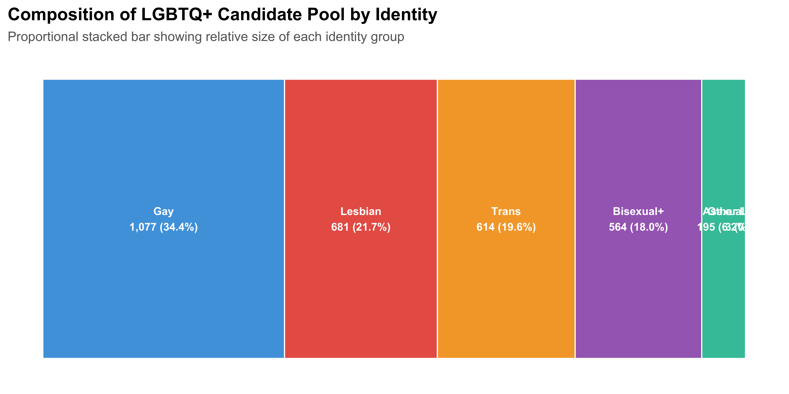
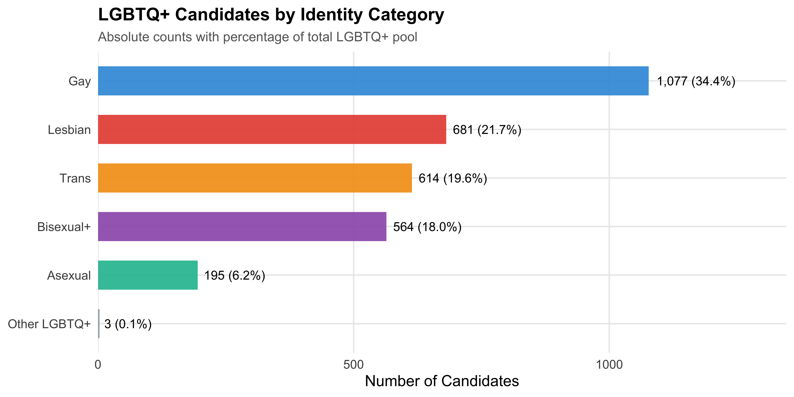
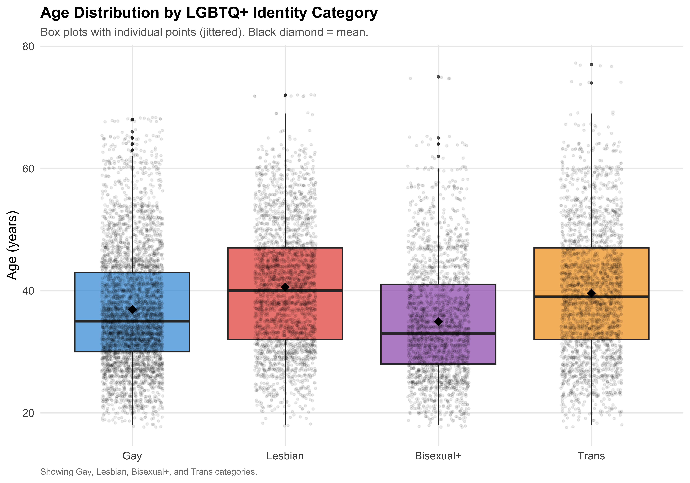
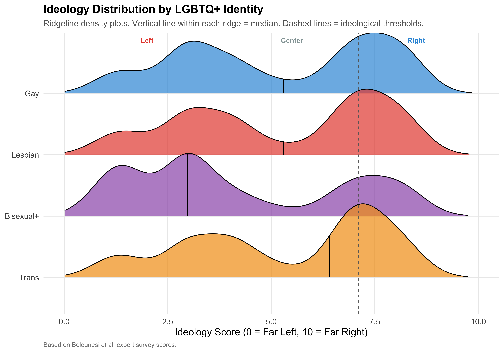
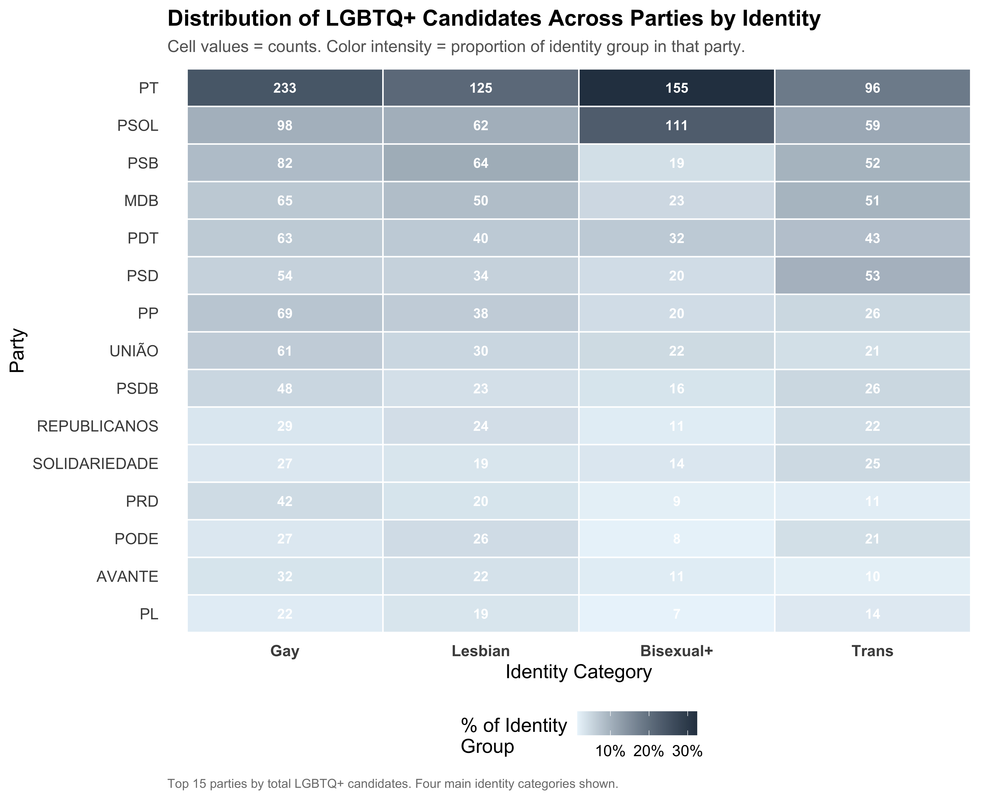
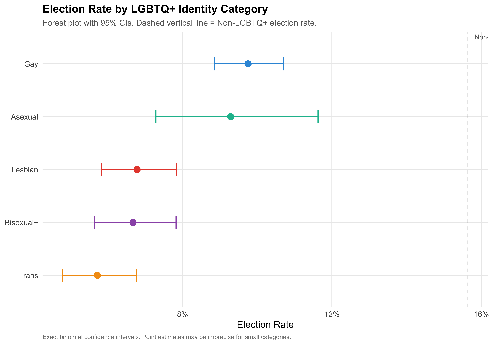
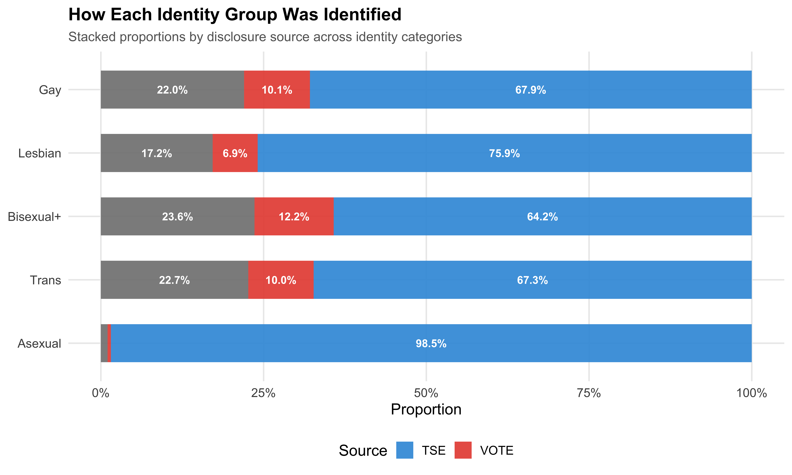

Within-Group Heterogeneity Among LGBTQ+ Candidates
Show code
source(here::here("code", "00_setup.R"))df <-readRDS(paths$analysis_full_rds)df <- df %>%mutate(ideology_category =factor(ideology_category, levels = ideology_levels))# Working subsetslgbtq <- df %>%filter(lgbtq_candidate)n_lgbtq <-nrow(lgbtq)# Categories used in comparative analyses (excluding "Other LGBTQ+", N=12, too small for reliable estimates)analysis_categories <-c("Gay", "Lesbian", "Bisexual+", "Trans", "Asexual")
1 Overview
The previous chapter treated LGBTQ+ candidates as a single group. That is a useful starting point, but it conceals profound differences. A gay white man running for city council in São Paulo on a center-left ticket inhabits a very different political reality than a trans Black woman running in a small Northeastern municipality for a left-wing party.
This chapter disaggregates the LGBTQ+ umbrella into its constituent identity categories and asks: How do Gay, Lesbian, Bisexual+, and Trans candidates differ from one another — in demographics, political positioning, party affiliation, and electoral success?
The analysis focuses on the 12,532 LGBTQ+ candidates identified in the dataset.
2 Identity Categories
2.1 Category Construction
The lgbt_category variable classifies each LGBTQ+ candidate into one of six categories: Gay, Lesbian, Bisexual+ (including bisexual and pansexual), Trans (transgender and travesti), Asexual, and Other LGBTQ+ (candidates identified as LGBTQ+ but without a more specific classification).
Classification Rule: Trans Takes Priority
A key coding decision: trans identity is prioritized over sexual orientation. A candidate who identifies as both transgender and lesbian is classified as “Trans,” not “Lesbian.” This reflects the sociological logic that gender identity is typically the more salient axis of political visibility and discrimination. The alternative coding (prioritizing sexual orientation) would obscure the experiences of trans candidates who also hold non-heterosexual orientations — which is the majority of trans candidates.
2.2 Distribution of Identity Categories
The lgbt_category variable classifies each LGBTQ+ candidate based on a combination of TSE self-reported sexual orientation/gender identity and VOTE LGBT records. Trans identity is prioritized over sexual orientation (see note above). The table below reports the count and cumulative share of each category.
Show code
identity_counts <- lgbtq %>%count(lgbt_category, sort =TRUE) %>%mutate(pct = n /sum(n),pct_fmt =format_pct(pct),cum_pct =format_pct(cumsum(pct)) )identity_counts %>%select(Category = lgbt_category, N = n, `%`= pct_fmt, `Cumulative %`= cum_pct) %>%kable(align =c("l", "r", "r", "r"))
Table 1: LGBTQ+ Candidates by Identity Category
Category
N
%
Cumulative %
Gay
4308
34.4%
34.4%
Lesbian
2724
21.7%
56.1%
Trans
2454
19.6%
75.7%
Bisexual+
2254
18.0%
93.7%
Asexual
780
6.2%
99.9%
Other LGBTQ+
12
0.1%
100.0%
Show code
# Treemap-style visualization using ggplot2 rectangles# We approximate a waffle chart with a proportional bar chartlgbtq %>%count(lgbt_category) %>%mutate(pct = n /sum(n),label =paste0(lgbt_category, "\n", format_n(n), " (", format_pct(pct), ")") ) %>%arrange(desc(n)) %>%mutate(lgbt_category =fct_reorder(lgbt_category, n)) %>%ggplot(aes(x ="", y = pct, fill = lgbt_category)) +geom_col(width =1, alpha =0.9, color ="white", linewidth =0.5) +geom_text(aes(label = label),position =position_stack(vjust =0.5),size =3.5, color ="white", fontface ="bold" ) +coord_flip() +scale_fill_manual(values = pal_identity, guide ="none") +labs(x =NULL, y =NULL,title ="Composition of LGBTQ+ Candidate Pool by Identity",subtitle ="Proportional stacked bar showing relative size of each identity group" ) +theme(axis.text =element_blank(),axis.ticks =element_blank(),panel.grid =element_blank() )save_figure(last_plot(), "03_identity_waffle")

Figure 1: Composition of LGBTQ+ Candidates by Identity Category
Show code
lgbtq %>%count(lgbt_category) %>%mutate(pct = n /sum(n),label =paste0(format_n(n), " (", format_pct(pct), ")") ) %>%ggplot(aes(x =reorder(lgbt_category, n), y = n, fill = lgbt_category)) +geom_col(alpha =0.9, show.legend =FALSE, width =0.6) +geom_text(aes(label = label), hjust =-0.1, size =4) +coord_flip() +scale_y_continuous(expand =expansion(mult =c(0, 0.25))) +scale_fill_manual(values = pal_identity) +labs(x =NULL, y ="Number of Candidates",title ="LGBTQ+ Candidates by Identity Category",subtitle ="Absolute counts with percentage of total LGBTQ+ pool" )save_figure(last_plot(), "03_identity_bar")

Figure 2: Number of LGBTQ+ Candidates by Identity Category
Analytical Sample
The “Other LGBTQ+” category contains only 12 candidates — too few for reliable statistical comparisons. All subsequent analyses in this chapter exclude this category and focus on the five substantive identity groups: Gay, Lesbian, Bisexual+, Trans, and Asexual. The descriptive count tables above include all candidates for completeness.
3 Demographic Profiles
3.1 Multi-Column Comparison Table
The table below compares the identity groups on core demographics: mean age, gender composition (% female), racial breakdown (% Nonwhite, White, Black, Brown), and educational attainment (% College+). All variables are defined as in Chapter 1. Smaller categories (Asexual, Other LGBTQ+) are included for completeness but should be interpreted with caution given their smaller sample sizes.
Table 2: Demographic Profiles by Identity Category
Category
N
Mean Age
SD Age
% Female
% Nonwhite
% White
% Black
% Brown
% College+
Gay
4,308
36.9
9.7
2.4%
58.3%
41.7%
23.7%
33.1%
57.7%
Lesbian
2,724
40.6
10.2
99.9%
60.9%
39.1%
22.8%
36.7%
45.2%
Bisexual+
2,254
34.9
9.5
62.7%
61.1%
38.9%
28.5%
30.5%
65.7%
Trans
2,454
39.6
10.8
77.1%
65.8%
34.2%
21.8%
41.5%
31.4%
Asexual
780
47.3
11.9
46.2%
62.6%
37.4%
13.8%
46.2%
28.7%
Several dimensions warrant attention:
Gender composition differs across categories by definition (Gay candidates are male, Lesbian candidates are female) and by social structure (the gender distribution among Trans and Bisexual+ candidates reflects the composition of each group’s candidate pool).
Age varies across identities, potentially reflecting different generational patterns of openness and political entry.
Education differences across groups may reflect structural inequalities — particularly for trans candidates, who face documented barriers to formal education in Brazil.
3.2 Age Distribution by Identity
Age is calculated from the candidate’s date of birth as of election day (October 2024). The box plots below compare the full age distribution across the four main identity categories (Gay, Lesbian, Bisexual+, Trans), with individual observations shown as jittered points and the mean marked by a black diamond.
Show code
# Focus on the four main categories for visual claritymain_categories <-c("Gay", "Lesbian", "Bisexual+", "Trans")lgbtq %>%filter(lgbt_category %in% main_categories, !is.na(age)) %>%mutate(lgbt_category =factor(lgbt_category, levels = main_categories)) %>%ggplot(aes(x = lgbt_category, y = age, fill = lgbt_category)) +geom_boxplot(alpha =0.7, outlier.alpha =0.3, outlier.size =1) +geom_jitter(alpha =0.08, width =0.2, size =0.8) +stat_summary(fun = mean, geom ="point", shape =18, size =4, color ="black") +scale_fill_manual(values = pal_identity, guide ="none") +labs(x =NULL, y ="Age (years)",title ="Age Distribution by LGBTQ+ Identity Category",subtitle ="Box plots with individual points (jittered). Black diamond = mean.",caption ="Showing Gay, Lesbian, Bisexual+, and Trans categories." )save_figure(last_plot(), "03_age_boxplot")

Figure 3: Age Distribution by Identity Category
3.3 Race and Education by Identity
Race/ethnicity is self-reported on TSE forms (simplified into White, Black, Brown, and Other). Education level is simplified into three groups: Less than High School, High School, and College+. The figures below show the racial and educational composition within each identity category.
Show code
lgbtq %>%filter(lgbt_category %in% main_categories, !is.na(race_simple)) %>%mutate(lgbt_category =factor(lgbt_category, levels = main_categories)) %>%count(lgbt_category, race_simple) %>%group_by(lgbt_category) %>%mutate(pct = n /sum(n)) %>%ungroup() %>%ggplot(aes(x = race_simple, y = pct, fill = race_simple)) +geom_col(alpha =0.9, width =0.7) +geom_text(aes(label =format_pct(pct)), vjust =-0.5, size =3) +facet_wrap(~lgbt_category, nrow =1) +scale_y_continuous(labels = percent, expand =expansion(mult =c(0, 0.15))) +scale_fill_manual(values = pal_race, name ="Race") +labs(x =NULL, y ="Proportion",title ="Racial Composition by LGBTQ+ Identity Category",subtitle ="Grouped bar charts within each identity group" ) +theme(axis.text.x =element_text(angle =45, hjust =1, size =9))save_figure(last_plot(), "03_race_by_identity")
Figure 5: Education Distribution by Identity Category
Trans Educational Attainment
Brazil’s trans population faces well-documented barriers to educational attainment, including school exclusion, bullying, and economic marginalization. Any differences in college completion rates between trans and other LGBTQ+ candidates should be interpreted in this structural context rather than as reflecting individual capacity.
4 Political Profiles
4.1 Ideology by Identity
Party ideology scores are drawn from Bolognesi et al.’s expert survey (0–10 left-right scale; Left < 4.0, Center 4.0–7.1, Right > 7.1). The ideological positioning of LGBTQ+ candidates may vary by identity group; the table below shows the share of each identity category in Left, Center, and Right parties.
Table 4: Ideology Score Summary by Identity Category
Category
N
Mean
SD
Median
Gay
4308
5.18
2.38
5.29
Lesbian
2724
5.22
2.35
5.29
Bisexual+
2254
4.17
2.49
2.97
Trans
2454
5.33
2.29
6.50
Asexual
780
6.33
1.93
7.09
Show code
library(ggridges)lgbtq %>%filter(!is.na(ideology_score), lgbt_category %in% main_categories) %>%mutate(lgbt_category =factor(lgbt_category, levels =rev(main_categories))) %>%ggplot(aes(x = ideology_score, y = lgbt_category, fill = lgbt_category)) +geom_density_ridges(alpha =0.7,scale =1.2,rel_min_height =0.01,quantile_lines =TRUE,quantiles =2 ) +geom_vline(xintercept =c(4, 7.1), linetype ="dashed", color ="gray40", linewidth =0.4) +annotate("text", x =2, y =Inf, label ="Left", vjust =2, color ="#E74C3C", fontface ="bold", size =3.5) +annotate("text", x =5.5, y =Inf, label ="Center", vjust =2, color ="#95A5A6", fontface ="bold", size =3.5) +annotate("text", x =8.5, y =Inf, label ="Right", vjust =2, color ="#3498DB", fontface ="bold", size =3.5) +scale_fill_manual(values = pal_identity, guide ="none") +scale_x_continuous(limits =c(0, 10)) +labs(x ="Ideology Score (0 = Far Left, 10 = Far Right)", y =NULL,title ="Ideology Distribution by LGBTQ+ Identity",subtitle ="Ridgeline density plots. Vertical line within each ridge = median. Dashed lines = ideological thresholds.",caption ="Based on Bolognesi et al. expert survey scores." )save_figure(last_plot(), "03_ideology_ridgeline")

Figure 6: Ideology Score Distribution by Identity Category (Ridgeline Plot)
4.2 Top Parties by Identity
Which parties serve as vehicles for each identity group? The table below shows the top 3 parties by candidate count for each identity category, along with the share of each category’s candidates that the party represents.
Show code
lgbtq %>%filter(lgbt_category %in% analysis_categories) %>%count(lgbt_category, party_abbrev, sort =TRUE) %>%group_by(lgbt_category) %>%mutate(rank =row_number(),pct =format_pct(n /sum(n)) ) %>%filter(rank <=3) %>%ungroup() %>%select(Category = lgbt_category, Rank = rank, Party = party_abbrev, N = n, `% within Category`= pct) %>%kable(align =c("l", "r", "l", "r", "r"))
Table 5: Top 3 Parties by Identity Category
Category
Rank
Party
N
% within Category
Gay
1
PT
932
21.6%
Bisexual+
1
PT
618
27.4%
Lesbian
1
PT
500
18.4%
Bisexual+
2
PSOL
444
19.7%
Gay
2
PSOL
392
9.1%
Trans
1
PT
384
15.6%
Gay
3
PSB
328
7.6%
Lesbian
2
PSB
256
9.4%
Lesbian
3
PSOL
248
9.1%
Trans
2
PSOL
236
9.6%
Trans
3
PSD
212
8.6%
Bisexual+
3
PDT
128
5.7%
Asexual
1
PT
88
11.3%
Asexual
2
PRD
80
10.3%
Asexual
3
SOLIDARIEDADE
72
9.2%
4.3 Party-Identity Heatmap
The heatmap below provides a comprehensive view of how candidates from each identity group distribute across major parties. This reveals both party-level openness and identity-specific party preferences.
Show code
# Get top 15 parties among LGBTQ+ candidatestop_lgbtq_parties <- lgbtq %>%count(party_abbrev, sort =TRUE) %>%head(15) %>%pull(party_abbrev)heatmap_data <- lgbtq %>%filter( party_abbrev %in% top_lgbtq_parties, lgbt_category %in% main_categories ) %>%count(party_abbrev, lgbt_category) %>%group_by(lgbt_category) %>%mutate(pct = n /sum(n)) %>%ungroup()heatmap_data %>%ggplot(aes(x =factor(lgbt_category, levels = main_categories),y =reorder(party_abbrev, n, FUN = sum),fill = pct )) +geom_tile(color ="white", linewidth =0.5) +geom_text(aes(label = n), size =3.5, color ="white", fontface ="bold") +scale_fill_gradient(low ="#EBF5FB", high ="#2C3E50",labels = percent, name ="% of Identity\nGroup" ) +labs(x ="Identity Category", y ="Party",title ="Distribution of LGBTQ+ Candidates Across Parties by Identity",subtitle ="Cell values = counts. Color intensity = proportion of identity group in that party.",caption ="Top 15 parties by total LGBTQ+ candidates. Four main identity categories shown." ) +theme(panel.grid =element_blank(),axis.text.x =element_text(face ="bold") )save_figure(last_plot(), "03_party_identity_heatmap")

Figure 7: Party x Identity Heatmap
Party Preferences Differ by Identity
The heatmap reveals the extent to which different identity groups concentrate in different parties. If party preferences vary across identities, this suggests that different groups face distinct opportunity structures in the party system. Parties that are receptive to some LGBTQ+ identities may not be equally receptive to all.
5 Electoral Outcomes
5.1 Election Rate by Identity
Election rate is the proportion of candidates who won their race (elected = 1), including outright winners and those elected by average in proportional races. The table below reports election rates for each identity category, with exact binomial 95% confidence intervals to account for varying sample sizes.
The forest plot below visualizes election rates for each identity group alongside the overall non-LGBTQ+ reference rate (dashed vertical line). Point estimates with confidence intervals that do not cross the reference line indicate a statistically distinguishable difference from the non-LGBTQ+ baseline.
Show code
# Calculate non-LGBTQ+ reference rateref_rate <- df %>%filter(!lgbtq_candidate, !is.na(elected)) %>%summarise(rate =mean(elected)) %>%pull(rate)election_by_id %>%mutate(lgbt_category =fct_reorder(lgbt_category, Rate),sig =ifelse(CI_low > ref_rate, "Above", ifelse(CI_high < ref_rate, "Below", "Overlaps")) ) %>%ggplot(aes(x = Rate, y = lgbt_category, color = lgbt_category)) +geom_vline(xintercept = ref_rate,linetype ="dashed", color ="gray40", linewidth =0.6 ) +annotate("text", x = ref_rate, y =Inf, label =paste0("Non-LGBTQ+: ", format_pct(ref_rate)),hjust =-0.1, vjust =1.5, size =3.5, color ="gray40") +geom_errorbarh(aes(xmin = CI_low, xmax = CI_high),height =0.25, linewidth =0.8 ) +geom_point(size =4) +scale_x_continuous(labels = percent) +scale_color_manual(values = pal_identity, guide ="none") +labs(x ="Election Rate", y =NULL,title ="Election Rate by LGBTQ+ Identity Category",subtitle ="Forest plot with 95% CIs. Dashed vertical line = Non-LGBTQ+ election rate.",caption ="Exact binomial confidence intervals. Point estimates may be imprecise for small categories." )save_figure(last_plot(), "03_forest_election")

Figure 8: Election Rates by Identity: Forest Plot with Non-LGBTQ+ Reference
Small Sample Caveat
The Asexual category contains a modest sample size (780 candidates). While included for completeness, its estimates carry wider confidence intervals than the four main categories — Gay, Lesbian, Bisexual+, and Trans — which provide the most reliable within-group comparisons.
6 Disclosure Patterns
6.1 How Are Different Identities Identified?
Disclosure source indicates whether a candidate was identified via TSE self-declaration, VOTE LGBT external matching, or both. The relationship between identity and disclosure source is substantively important: gender identity (trans status) may be more publicly visible — and therefore more likely to be captured by VOTE LGBT through public campaigning — whereas sexual orientation may be more private and more often revealed through TSE self-declaration.
lgbtq %>%filter(lgbt_category %in% analysis_categories) %>%count(lgbt_category, disclosure_source) %>%group_by(lgbt_category) %>%mutate(pct = n /sum(n)) %>%ungroup() %>%ggplot(aes(x =fct_reorder(lgbt_category, -as.numeric(factor(lgbt_category))),y = pct, fill = disclosure_source)) +geom_col(alpha =0.9, width =0.6) +geom_text(aes(label =ifelse(pct >0.05, format_pct(pct), "")),position =position_stack(vjust =0.5), size =3.5, color ="white", fontface ="bold" ) +coord_flip() +scale_y_continuous(labels = percent) +scale_fill_manual(values =c("TSE"="#3498DB", "VOTE"="#E74C3C", "Both"="#9B59B6"),name ="Source" ) +labs(x =NULL, y ="Proportion",title ="How Each Identity Group Was Identified",subtitle ="Stacked proportions by disclosure source across identity categories" )save_figure(last_plot(), "03_disclosure_by_identity")

Figure 9: Disclosure Source by Identity Category (Stacked Bars)
7 Summary
This chapter demonstrates that “LGBTQ+ candidates” is not a monolithic category. Key takeaways include:
Compositional diversity: The LGBTQ+ candidate pool comprises several distinct identity categories, each with a different share of the total pool.
Demographic heterogeneity: Age, gender composition, racial makeup, and educational attainment vary across identity groups, reflecting distinct structural positions within Brazilian society.
Ideological variation: The degree to which different identity groups concentrate in left, center, or right parties differs. The ridgeline plots reveal distinct distributional shapes rather than a single “LGBTQ+ ideology.”
Party sorting: Different identities concentrate in different parties, suggesting that the party system channels LGBTQ+ representation unevenly.
Electoral outcomes diverge: Election rates are not uniform across identities. The forest plot and confidence intervals indicate which groups differ from the non-LGBTQ+ baseline.
Disclosure is not random: The pathway through which candidates are identified as LGBTQ+ (TSE self-declaration vs. VOTE LGBT identification) varies by identity, with implications for data coverage and sample composition.
The next chapter examines the geographic dimension: where do LGBTQ+ candidates run, and how does geography interact with the identity patterns documented here?
Source Code
---title: "3. L-G-B-T Disaggregation"subtitle: "Within-Group Heterogeneity Among LGBTQ+ Candidates"---```{r setup}source(here::here("code", "00_setup.R"))df <- readRDS(paths$analysis_full_rds)df <- df %>% mutate(ideology_category = factor(ideology_category, levels = ideology_levels))# Working subsetslgbtq <- df %>% filter(lgbtq_candidate)n_lgbtq <- nrow(lgbtq)# Categories used in comparative analyses (excluding "Other LGBTQ+", N=12, too small for reliable estimates)analysis_categories <- c("Gay", "Lesbian", "Bisexual+", "Trans", "Asexual")```# OverviewThe previous chapter treated LGBTQ+ candidates as a single group. That is a useful starting point, but it conceals profound differences. A gay white man running for city council in São Paulo on a center-left ticket inhabits a very different political reality than a trans Black woman running in a small Northeastern municipality for a left-wing party.This chapter **disaggregates** the LGBTQ+ umbrella into its constituent identity categories and asks: How do Gay, Lesbian, Bisexual+, and Trans candidates differ from one another --- in demographics, political positioning, party affiliation, and electoral success?The analysis focuses on the `r format_n(n_lgbtq)` LGBTQ+ candidates identified in the dataset.# Identity Categories {#sec-categories}## Category ConstructionThe `lgbt_category` variable classifies each LGBTQ+ candidate into one of six categories: **Gay**, **Lesbian**, **Bisexual+** (including bisexual and pansexual), **Trans** (transgender and travesti), **Asexual**, and **Other LGBTQ+** (candidates identified as LGBTQ+ but without a more specific classification).::: {.callout-note}## Classification Rule: Trans Takes PriorityA key coding decision: **trans identity is prioritized over sexual orientation**. A candidate who identifies as both transgender and lesbian is classified as "Trans," not "Lesbian." This reflects the sociological logic that gender identity is typically the more salient axis of political visibility and discrimination. The alternative coding (prioritizing sexual orientation) would obscure the experiences of trans candidates who also hold non-heterosexual orientations --- which is the majority of trans candidates.:::## Distribution of Identity CategoriesThe `lgbt_category` variable classifies each LGBTQ+ candidate based on a combination of TSE self-reported sexual orientation/gender identity and VOTE LGBT records. Trans identity is prioritized over sexual orientation (see note above). The table below reports the count and cumulative share of each category.```{r tbl-identity-n}#| label: tbl-identity-n#| tbl-cap: "LGBTQ+ Candidates by Identity Category"identity_counts <- lgbtq %>% count(lgbt_category, sort = TRUE) %>% mutate( pct = n / sum(n), pct_fmt = format_pct(pct), cum_pct = format_pct(cumsum(pct)) )identity_counts %>% select(Category = lgbt_category, N = n, `%` = pct_fmt, `Cumulative %` = cum_pct) %>% kable(align = c("l", "r", "r", "r"))``````{r fig-identity-waffle}#| label: fig-identity-waffle#| fig-cap: "Composition of LGBTQ+ Candidates by Identity Category"#| fig-height: 5# Treemap-style visualization using ggplot2 rectangles# We approximate a waffle chart with a proportional bar chartlgbtq %>% count(lgbt_category) %>% mutate( pct = n / sum(n), label = paste0(lgbt_category, "\n", format_n(n), " (", format_pct(pct), ")") ) %>% arrange(desc(n)) %>% mutate(lgbt_category = fct_reorder(lgbt_category, n)) %>% ggplot(aes(x = "", y = pct, fill = lgbt_category)) + geom_col(width = 1, alpha = 0.9, color = "white", linewidth = 0.5) + geom_text( aes(label = label), position = position_stack(vjust = 0.5), size = 3.5, color = "white", fontface = "bold" ) + coord_flip() + scale_fill_manual(values = pal_identity, guide = "none") + labs( x = NULL, y = NULL, title = "Composition of LGBTQ+ Candidate Pool by Identity", subtitle = "Proportional stacked bar showing relative size of each identity group" ) + theme( axis.text = element_blank(), axis.ticks = element_blank(), panel.grid = element_blank() )save_figure(last_plot(), "03_identity_waffle")``````{r fig-identity-bar}#| label: fig-identity-bar#| fig-cap: "Number of LGBTQ+ Candidates by Identity Category"#| fig-height: 5lgbtq %>% count(lgbt_category) %>% mutate( pct = n / sum(n), label = paste0(format_n(n), " (", format_pct(pct), ")") ) %>% ggplot(aes(x = reorder(lgbt_category, n), y = n, fill = lgbt_category)) + geom_col(alpha = 0.9, show.legend = FALSE, width = 0.6) + geom_text(aes(label = label), hjust = -0.1, size = 4) + coord_flip() + scale_y_continuous(expand = expansion(mult = c(0, 0.25))) + scale_fill_manual(values = pal_identity) + labs( x = NULL, y = "Number of Candidates", title = "LGBTQ+ Candidates by Identity Category", subtitle = "Absolute counts with percentage of total LGBTQ+ pool" )save_figure(last_plot(), "03_identity_bar")```::: {.callout-note}## Analytical SampleThe "Other LGBTQ+" category contains only `r format_n(sum(lgbtq$lgbt_category == "Other LGBTQ+"))` candidates --- too few for reliable statistical comparisons. All subsequent analyses in this chapter exclude this category and focus on the five substantive identity groups: Gay, Lesbian, Bisexual+, Trans, and Asexual. The descriptive count tables above include all candidates for completeness.:::# Demographic Profiles {#sec-demographics}## Multi-Column Comparison TableThe table below compares the identity groups on core demographics: mean age, gender composition (% female), racial breakdown (% Nonwhite, White, Black, Brown), and educational attainment (% College+). All variables are defined as in Chapter 1. Smaller categories (Asexual, Other LGBTQ+) are included for completeness but should be interpreted with caution given their smaller sample sizes.```{r tbl-demo-by-identity}#| label: tbl-demo-by-identity#| tbl-cap: "Demographic Profiles by Identity Category"demo_by_id <- lgbtq %>% filter(lgbt_category %in% analysis_categories) %>% group_by(lgbt_category) %>% summarise( N = n(), `Mean Age` = round(mean(age, na.rm = TRUE), 1), `SD Age` = round(sd(age, na.rm = TRUE), 1), `% Female` = format_pct(mean(female, na.rm = TRUE)), `% Nonwhite` = format_pct(mean(nonwhite, na.rm = TRUE)), `% White` = format_pct(mean(race_simple == "White", na.rm = TRUE)), `% Black` = format_pct(mean(race_simple == "Black", na.rm = TRUE)), `% Brown` = format_pct(mean(race_simple == "Brown", na.rm = TRUE)), `% College+` = format_pct(mean(education_simple == "College+", na.rm = TRUE)), .groups = "drop" ) %>% rename(Category = lgbt_category)demo_by_id %>% mutate(N = format_n(N)) %>% kable(align = c("l", "r", "r", "r", "r", "r", "r", "r", "r", "r"))```Several dimensions warrant attention:- **Gender composition** differs across categories by definition (Gay candidates are male, Lesbian candidates are female) and by social structure (the gender distribution among Trans and Bisexual+ candidates reflects the composition of each group's candidate pool).- **Age** varies across identities, potentially reflecting different generational patterns of openness and political entry.- **Education** differences across groups may reflect structural inequalities --- particularly for trans candidates, who face documented barriers to formal education in Brazil.## Age Distribution by IdentityAge is calculated from the candidate's date of birth as of election day (October 2024). The box plots below compare the full age distribution across the four main identity categories (Gay, Lesbian, Bisexual+, Trans), with individual observations shown as jittered points and the mean marked by a black diamond.```{r fig-age-boxplot}#| label: fig-age-boxplot#| fig-cap: "Age Distribution by Identity Category"# Focus on the four main categories for visual claritymain_categories <- c("Gay", "Lesbian", "Bisexual+", "Trans")lgbtq %>% filter(lgbt_category %in% main_categories, !is.na(age)) %>% mutate(lgbt_category = factor(lgbt_category, levels = main_categories)) %>% ggplot(aes(x = lgbt_category, y = age, fill = lgbt_category)) + geom_boxplot(alpha = 0.7, outlier.alpha = 0.3, outlier.size = 1) + geom_jitter(alpha = 0.08, width = 0.2, size = 0.8) + stat_summary(fun = mean, geom = "point", shape = 18, size = 4, color = "black") + scale_fill_manual(values = pal_identity, guide = "none") + labs( x = NULL, y = "Age (years)", title = "Age Distribution by LGBTQ+ Identity Category", subtitle = "Box plots with individual points (jittered). Black diamond = mean.", caption = "Showing Gay, Lesbian, Bisexual+, and Trans categories." )save_figure(last_plot(), "03_age_boxplot")```## Race and Education by IdentityRace/ethnicity is self-reported on TSE forms (simplified into White, Black, Brown, and Other). Education level is simplified into three groups: Less than High School, High School, and College+. The figures below show the racial and educational composition within each identity category.```{r fig-race-by-identity}#| label: fig-race-by-identity#| fig-cap: "Race Distribution by Identity Category"#| fig-height: 6lgbtq %>% filter(lgbt_category %in% main_categories, !is.na(race_simple)) %>% mutate(lgbt_category = factor(lgbt_category, levels = main_categories)) %>% count(lgbt_category, race_simple) %>% group_by(lgbt_category) %>% mutate(pct = n / sum(n)) %>% ungroup() %>% ggplot(aes(x = race_simple, y = pct, fill = race_simple)) + geom_col(alpha = 0.9, width = 0.7) + geom_text(aes(label = format_pct(pct)), vjust = -0.5, size = 3) + facet_wrap(~lgbt_category, nrow = 1) + scale_y_continuous(labels = percent, expand = expansion(mult = c(0, 0.15))) + scale_fill_manual(values = pal_race, name = "Race") + labs( x = NULL, y = "Proportion", title = "Racial Composition by LGBTQ+ Identity Category", subtitle = "Grouped bar charts within each identity group" ) + theme(axis.text.x = element_text(angle = 45, hjust = 1, size = 9))save_figure(last_plot(), "03_race_by_identity")``````{r fig-education-by-identity}#| label: fig-education-by-identity#| fig-cap: "Education Distribution by Identity Category"#| fig-height: 6lgbtq %>% filter(lgbt_category %in% main_categories, !is.na(education_simple)) %>% mutate( lgbt_category = factor(lgbt_category, levels = main_categories), education_simple = factor(education_simple, levels = c("Less than HS", "High School", "College+")) ) %>% count(lgbt_category, education_simple) %>% group_by(lgbt_category) %>% mutate(pct = n / sum(n)) %>% ungroup() %>% ggplot(aes(x = education_simple, y = pct, fill = lgbt_category)) + geom_col(alpha = 0.9, width = 0.6, show.legend = FALSE) + geom_text(aes(label = format_pct(pct)), vjust = -0.5, size = 3) + facet_wrap(~lgbt_category, nrow = 1) + scale_y_continuous(labels = percent, expand = expansion(mult = c(0, 0.15))) + scale_fill_manual(values = pal_identity) + labs( x = NULL, y = "Proportion", title = "Education Levels by LGBTQ+ Identity Category", subtitle = "Comparing educational attainment across identity groups" ) + theme(axis.text.x = element_text(angle = 45, hjust = 1, size = 9))save_figure(last_plot(), "03_education_by_identity")```::: {.callout-note}## Trans Educational AttainmentBrazil's trans population faces well-documented barriers to educational attainment, including school exclusion, bullying, and economic marginalization. Any differences in college completion rates between trans and other LGBTQ+ candidates should be interpreted in this structural context rather than as reflecting individual capacity.:::# Political Profiles {#sec-political}## Ideology by IdentityParty ideology scores are drawn from Bolognesi et al.'s expert survey (0--10 left-right scale; Left < 4.0, Center 4.0--7.1, Right > 7.1). The ideological positioning of LGBTQ+ candidates may vary by identity group; the table below shows the share of each identity category in Left, Center, and Right parties.```{r tbl-ideology-by-identity}#| label: tbl-ideology-by-identity#| tbl-cap: "Ideology Distribution by Identity Category"lgbtq %>% filter(!is.na(ideology_category), lgbt_category %in% analysis_categories) %>% count(lgbt_category, ideology_category) %>% group_by(lgbt_category) %>% mutate(pct = format_pct(n / sum(n))) %>% ungroup() %>% select(-n) %>% pivot_wider(names_from = ideology_category, values_from = pct, values_fill = "0.0%") %>% rename(Category = lgbt_category) %>% kable(align = c("l", "r", "r", "r"))``````{r tbl-ideology-score-by-identity}#| label: tbl-ideology-score-by-identity#| tbl-cap: "Ideology Score Summary by Identity Category"lgbtq %>% filter(!is.na(ideology_score), lgbt_category %in% analysis_categories) %>% group_by(lgbt_category) %>% summarise( N = n(), Mean = round(mean(ideology_score), 2), SD = round(sd(ideology_score), 2), Median = round(median(ideology_score), 2), .groups = "drop" ) %>% rename(Category = lgbt_category) %>% kable(align = c("l", "r", "r", "r", "r"))``````{r fig-ideology-ridgeline}#| label: fig-ideology-ridgeline#| fig-cap: "Ideology Score Distribution by Identity Category (Ridgeline Plot)"#| fig-height: 7library(ggridges)lgbtq %>% filter(!is.na(ideology_score), lgbt_category %in% main_categories) %>% mutate(lgbt_category = factor(lgbt_category, levels = rev(main_categories))) %>% ggplot(aes(x = ideology_score, y = lgbt_category, fill = lgbt_category)) + geom_density_ridges( alpha = 0.7, scale = 1.2, rel_min_height = 0.01, quantile_lines = TRUE, quantiles = 2 ) + geom_vline(xintercept = c(4, 7.1), linetype = "dashed", color = "gray40", linewidth = 0.4) + annotate("text", x = 2, y = Inf, label = "Left", vjust = 2, color = "#E74C3C", fontface = "bold", size = 3.5) + annotate("text", x = 5.5, y = Inf, label = "Center", vjust = 2, color = "#95A5A6", fontface = "bold", size = 3.5) + annotate("text", x = 8.5, y = Inf, label = "Right", vjust = 2, color = "#3498DB", fontface = "bold", size = 3.5) + scale_fill_manual(values = pal_identity, guide = "none") + scale_x_continuous(limits = c(0, 10)) + labs( x = "Ideology Score (0 = Far Left, 10 = Far Right)", y = NULL, title = "Ideology Distribution by LGBTQ+ Identity", subtitle = "Ridgeline density plots. Vertical line within each ridge = median. Dashed lines = ideological thresholds.", caption = "Based on Bolognesi et al. expert survey scores." )save_figure(last_plot(), "03_ideology_ridgeline")```## Top Parties by IdentityWhich parties serve as vehicles for each identity group? The table below shows the top 3 parties by candidate count for each identity category, along with the share of each category's candidates that the party represents.```{r tbl-top-parties-by-identity}#| label: tbl-top-parties-by-identity#| tbl-cap: "Top 3 Parties by Identity Category"lgbtq %>% filter(lgbt_category %in% analysis_categories) %>% count(lgbt_category, party_abbrev, sort = TRUE) %>% group_by(lgbt_category) %>% mutate( rank = row_number(), pct = format_pct(n / sum(n)) ) %>% filter(rank <= 3) %>% ungroup() %>% select(Category = lgbt_category, Rank = rank, Party = party_abbrev, N = n, `% within Category` = pct) %>% kable(align = c("l", "r", "l", "r", "r"))```## Party-Identity HeatmapThe heatmap below provides a comprehensive view of how candidates from each identity group distribute across major parties. This reveals both party-level openness and identity-specific party preferences.```{r fig-party-identity-heatmap}#| label: fig-party-identity-heatmap#| fig-cap: "Party x Identity Heatmap"#| fig-height: 8#| fig-width: 10# Get top 15 parties among LGBTQ+ candidatestop_lgbtq_parties <- lgbtq %>% count(party_abbrev, sort = TRUE) %>% head(15) %>% pull(party_abbrev)heatmap_data <- lgbtq %>% filter( party_abbrev %in% top_lgbtq_parties, lgbt_category %in% main_categories ) %>% count(party_abbrev, lgbt_category) %>% group_by(lgbt_category) %>% mutate(pct = n / sum(n)) %>% ungroup()heatmap_data %>% ggplot(aes( x = factor(lgbt_category, levels = main_categories), y = reorder(party_abbrev, n, FUN = sum), fill = pct )) + geom_tile(color = "white", linewidth = 0.5) + geom_text(aes(label = n), size = 3.5, color = "white", fontface = "bold") + scale_fill_gradient( low = "#EBF5FB", high = "#2C3E50", labels = percent, name = "% of Identity\nGroup" ) + labs( x = "Identity Category", y = "Party", title = "Distribution of LGBTQ+ Candidates Across Parties by Identity", subtitle = "Cell values = counts. Color intensity = proportion of identity group in that party.", caption = "Top 15 parties by total LGBTQ+ candidates. Four main identity categories shown." ) + theme( panel.grid = element_blank(), axis.text.x = element_text(face = "bold") )save_figure(last_plot(), "03_party_identity_heatmap")```::: {.callout-note}## Party Preferences Differ by IdentityThe heatmap reveals the extent to which different identity groups concentrate in different parties. If party preferences vary across identities, this suggests that different groups face distinct opportunity structures in the party system. Parties that are receptive to some LGBTQ+ identities may not be equally receptive to all.:::# Electoral Outcomes {#sec-outcomes}## Election Rate by Identity**Election rate** is the proportion of candidates who won their race (elected = 1), including outright winners and those elected by average in proportional races. The table below reports election rates for each identity category, with exact binomial 95% confidence intervals to account for varying sample sizes.```{r tbl-election-by-identity}#| label: tbl-election-by-identity#| tbl-cap: "Election Rates by Identity Category"election_by_id <- lgbtq %>% filter(!is.na(elected), lgbt_category %in% analysis_categories) %>% group_by(lgbt_category) %>% summarise( N = n(), Elected = sum(elected), Rate = mean(elected), .groups = "drop" ) %>% rowwise() %>% mutate( ci = list(binom.test(Elected, N)$conf.int), CI_low = ci[1], CI_high = ci[2] ) %>% ungroup() %>% select(-ci)election_by_id %>% mutate( `Election Rate` = format_pct(Rate), `95% CI` = paste0("[", format_pct(CI_low), ", ", format_pct(CI_high), "]"), N = format_n(N), Elected = format_n(Elected) ) %>% select(Category = lgbt_category, N, Elected, `Election Rate`, `95% CI`) %>% kable(align = c("l", "r", "r", "r", "r"))```## Forest PlotThe forest plot below visualizes election rates for each identity group alongside the overall non-LGBTQ+ reference rate (dashed vertical line). Point estimates with confidence intervals that do not cross the reference line indicate a statistically distinguishable difference from the non-LGBTQ+ baseline.```{r fig-forest-election}#| label: fig-forest-election#| fig-cap: "Election Rates by Identity: Forest Plot with Non-LGBTQ+ Reference"#| fig-height: 7# Calculate non-LGBTQ+ reference rateref_rate <- df %>% filter(!lgbtq_candidate, !is.na(elected)) %>% summarise(rate = mean(elected)) %>% pull(rate)election_by_id %>% mutate( lgbt_category = fct_reorder(lgbt_category, Rate), sig = ifelse(CI_low > ref_rate, "Above", ifelse(CI_high < ref_rate, "Below", "Overlaps")) ) %>% ggplot(aes(x = Rate, y = lgbt_category, color = lgbt_category)) + geom_vline( xintercept = ref_rate, linetype = "dashed", color = "gray40", linewidth = 0.6 ) + annotate("text", x = ref_rate, y = Inf, label = paste0("Non-LGBTQ+: ", format_pct(ref_rate)), hjust = -0.1, vjust = 1.5, size = 3.5, color = "gray40") + geom_errorbarh( aes(xmin = CI_low, xmax = CI_high), height = 0.25, linewidth = 0.8 ) + geom_point(size = 4) + scale_x_continuous(labels = percent) + scale_color_manual(values = pal_identity, guide = "none") + labs( x = "Election Rate", y = NULL, title = "Election Rate by LGBTQ+ Identity Category", subtitle = "Forest plot with 95% CIs. Dashed vertical line = Non-LGBTQ+ election rate.", caption = "Exact binomial confidence intervals. Point estimates may be imprecise for small categories." )save_figure(last_plot(), "03_forest_election")```::: {.callout-note}## Small Sample CaveatThe Asexual category contains a modest sample size (`r format_n(sum(lgbtq$lgbt_category == "Asexual"))` candidates). While included for completeness, its estimates carry wider confidence intervals than the four main categories --- Gay, Lesbian, Bisexual+, and Trans --- which provide the most reliable within-group comparisons.:::# Disclosure Patterns {#sec-disclosure}## How Are Different Identities Identified?**Disclosure source** indicates whether a candidate was identified via TSE self-declaration, VOTE LGBT external matching, or both. The relationship between identity and disclosure source is substantively important: gender identity (trans status) may be more publicly visible --- and therefore more likely to be captured by VOTE LGBT through public campaigning --- whereas sexual orientation may be more private and more often revealed through TSE self-declaration.```{r tbl-disclosure-by-identity}#| label: tbl-disclosure-by-identity#| tbl-cap: "Identity Category by Disclosure Source"disclosure_tab <- lgbtq %>% filter(lgbt_category %in% analysis_categories) %>% count(lgbt_category, disclosure_source) %>% group_by(lgbt_category) %>% mutate(pct = n / sum(n)) %>% ungroup()# Wide format for tabledisclosure_tab %>% mutate(cell = paste0(n, " (", format_pct(pct), ")")) %>% select(lgbt_category, disclosure_source, cell) %>% pivot_wider(names_from = disclosure_source, values_from = cell, values_fill = "0 (0.0%)") %>% rename(Category = lgbt_category) %>% kable(align = c("l", rep("r", ncol(.) - 1)))``````{r fig-disclosure-by-identity}#| label: fig-disclosure-by-identity#| fig-cap: "Disclosure Source by Identity Category (Stacked Bars)"#| fig-height: 6lgbtq %>% filter(lgbt_category %in% analysis_categories) %>% count(lgbt_category, disclosure_source) %>% group_by(lgbt_category) %>% mutate(pct = n / sum(n)) %>% ungroup() %>% ggplot(aes(x = fct_reorder(lgbt_category, -as.numeric(factor(lgbt_category))), y = pct, fill = disclosure_source)) + geom_col(alpha = 0.9, width = 0.6) + geom_text( aes(label = ifelse(pct > 0.05, format_pct(pct), "")), position = position_stack(vjust = 0.5), size = 3.5, color = "white", fontface = "bold" ) + coord_flip() + scale_y_continuous(labels = percent) + scale_fill_manual( values = c("TSE" = "#3498DB", "VOTE" = "#E74C3C", "Both" = "#9B59B6"), name = "Source" ) + labs( x = NULL, y = "Proportion", title = "How Each Identity Group Was Identified", subtitle = "Stacked proportions by disclosure source across identity categories" )save_figure(last_plot(), "03_disclosure_by_identity")```# SummaryThis chapter demonstrates that "LGBTQ+ candidates" is not a monolithic category. Key takeaways include:1. **Compositional diversity**: The LGBTQ+ candidate pool comprises several distinct identity categories, each with a different share of the total pool.2. **Demographic heterogeneity**: Age, gender composition, racial makeup, and educational attainment vary across identity groups, reflecting distinct structural positions within Brazilian society.3. **Ideological variation**: The degree to which different identity groups concentrate in left, center, or right parties differs. The ridgeline plots reveal distinct distributional shapes rather than a single "LGBTQ+ ideology."4. **Party sorting**: Different identities concentrate in different parties, suggesting that the party system channels LGBTQ+ representation unevenly.5. **Electoral outcomes diverge**: Election rates are not uniform across identities. The forest plot and confidence intervals indicate which groups differ from the non-LGBTQ+ baseline.6. **Disclosure is not random**: The pathway through which candidates are identified as LGBTQ+ (TSE self-declaration vs. VOTE LGBT identification) varies by identity, with implications for data coverage and sample composition.The next chapter examines the **geographic dimension**: where do LGBTQ+ candidates run, and how does geography interact with the identity patterns documented here?